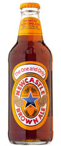

Beer
Beer is an alcoholic drink brewed mainly from malted barley, hops, yeast and water although other sources of fermentable carbohydrate (eg. maize, wheat, rice) and other natural ingredients may be added to create different styles and flavours.
BarleyThe main constituent in beer; as grapes are to wine, barley is to beer. Barley grains are low in fat and protein but rich in starch. Starch is the grain's food reserve that is made up of chains of sugar molecules. In nature this would feed the growing barley plant but in brewing we hijack thestarch to make beer! Malting starts the process of releasing the sugar and making it available for brewing. Brewers use specially selected varieties of barley that are particularly suited to being malted and making high quality beer. The maritime climate in the United Kingdom is particularly good for growing malting barley making British malt amongst the best in the world.
HopsA climbing plant that can grow to a height of over 20 feet, the hop's closest botanical relative is Cannabis! Hop cones contain a wealth of resins and essential oils which give the beer its distinctive bitterness and hop flavour. Contrary to public perception, beer is not "made from hops". Typically a barrel of beer is made from 20kg of malt and 150g of hops. Hops are used rather like a spice. Hops are picked in the late summer and dried in Oast Houses. Traditionally they are packed into tall sacks called pockets. Nowadays they tend to be compacted into pellets and vacuum packed in foil, like coffee, to preserve their freshness.
WaterA high quality is essential to the brewing process with four to six pints needed to produce every pint of beer. The particular salts naturally dissolved in local water supplies explains why some quite small towns such as Burton on Trent, Alton and Tadcaster could become home to several large breweries. The dissolved gypsum gave Burton beer keeping qualities which allowed them to be sold as far away as India.
YeastA microscopic member of the fungus family. The Latin name for brewing yeast is Saccharomyces cerevisiae - literally "beer sugar yeast"! Yeast grows on sugar producing alcohol and carbon dioxide in a process called fermentation. Yeast also produces a vast array of flavour compounds and much of the subtlety of beer flavour comes from the yeast strain and the fermentation conditions. Brewers use their own specially selected and jealously guarded yeast strains to produce the distinctive flavours of their own particular beers.
History
4000 BC In the middle east the Sumer people were fermenting a form of bread to make a fermented pulp which had an intoxicating effect - a "divine drink".
3000 BC The Babylonians had up to 20 different types of beer. The early beer was cloudy and unfiltered and was usually drunk through a straw to avoid drinking the solids from the brew, which could be very bitter.
1550 BC The Egyptians were also keen brewers and beer and malt has been found buried in the tombs of the Pharoahs to provide sustenance for the afterlife.
100 AD Beer was extensively drunk throughout the Roman Empire. The Romans preferred wine and introduced grapes into much of the Southern part of the Empire including the South of England. The local inhabitants tended to drink beer. Beer from this time had to be consumed fresh, was served cloudy and would have produced little or no foam. To aid its taste and keeping properties bitter herbs and spices may have been used.
The Middle Ages In the Middle Ages the largest brewers were the monasteries. The refreshing beer made a welcome break in a very austere lifestyle and could still be enjoyed during times of fasting. Monks soon acquired a taste for ale and records show that in some monasteries consumption up to five litres a day was allowed.
From 1000 AD Most beer was bittered with wild herbs such as bog myrtle (Myrica gale) often supplemented with lemon balm (Melissa officinalis), borage (Boragio officialis), St John's wort (Hypericium perforatum) or elderberries (Fructus sambuci nigrae).
The Introduction of Hops Hops are mentioned in records in Germany as early as 822 AD but their shoots may have been used by asparagus tips. Certainly Hidegarde of Bingen, writing around 1150 said that hops added to beer 'reduced the putrefaction' caused by spoilage organisms. The addition of hops slowly spread throughout Europe reaching Britain by the middle of the 15th century.
The Reinheitsgebot of 1516 The world's first food ingredient regulation is the German Purity Law or Reinheitsgebot which was first introduced in the Munich area in 1847 and extended to the whole of Bavaria in 1516. It later included the rest of Germany. The law stipulated that beer could only be brewed from water, hops and malt -- the use of yeast would come later, after it had been identified as the organism responsible for fermentation.
The Free Mash Tun Act 1880 Malt was first taxed in Britain in 1660, and the legislation prohibited the use of other cereals in brewing. This purity act continued until it was repealed by William Gladstone in 1880 and replaced by a tax on the sugar content of the wort prior to fermentation. The repeal followed a bad barley harvest and pressure from the colonial sugar growers to allow sugar cane to be used in the beer. The new law enabled "the brewer to brew from what he pleases and have a perfect choice of his materials and methods". The predominant beers of the day were dark quite sweet and malty - and often served at different alcoholic strength - strong ale, medium ale and weak ale made from different exracts of the same brew.
Taxonomy
The art of understanding beer is not an easy thing to master if you don't know where to start. Below are most major beer types and their respective categories.
 = BBar and Grill carries this beer.
= BBar and Grill carries this beer.
Ales
Ales are generally more complex in body than lagers, but not always. they are usually maltier and more aromatic as well.
Browns
Brown ales are dark and nutty, and usually medium-bodied without too much hop flavour.
EnglishSamuel Smith's Nut Brown AleBell's Best BrownTurbodogMaduro Oatmeal Brown AleNewcastle Brown Ale Click to know more
Newcastle Brown Ale
 Features fewer hops for a less bitter taste, a blend of light and dark malts for a unique, smooth flavor and a cool temperature for easy drinking.
Brewery: Originally produced in Newcastle upon Tyne, but now brewed by Heineken at the John Smith's Brewery in Tadcaster, North Yorkshire.
Story: Newcastle Brown Ale is perceived in the UK as a working-man's beer, with a long association with heavy industry, the traditional economic staple of the North East of England. In export markets, it is seen as a trendy, premium import and is predominantly drunk by the young. It was one of the first beers to be distributed in a clear glass bottle and it is most readily associated with this form of dispense in the UK, being very rarely seen on draught.
ABV: 4.7%
AmericanIndian Brown AlePalo Santo MarronSierra Nevada Tumbler Autumn Brown AleSmuttynose Old Brown Dog AleBrooklyn Brown Ale
Porters
Porters originated in the UK, and are ientified by their dark color, a light roastiness, and a hint of molasses-like sweetness.